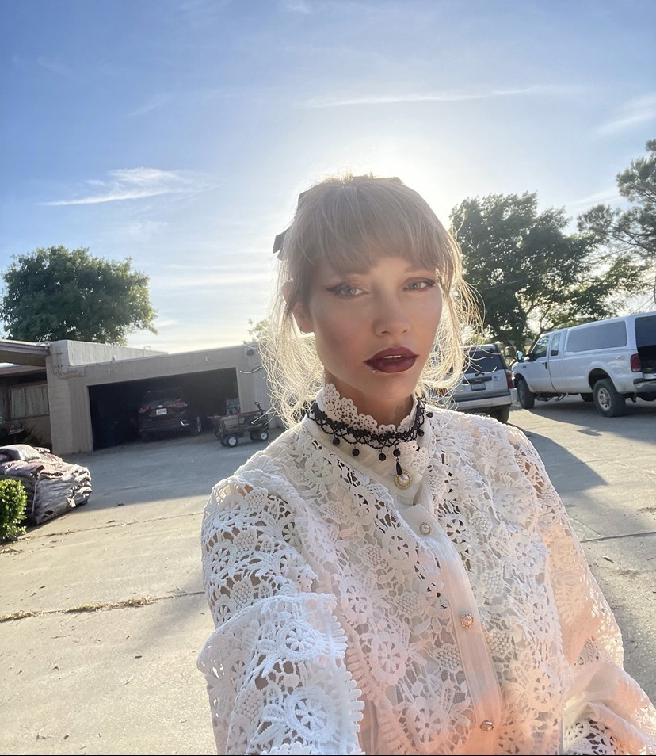
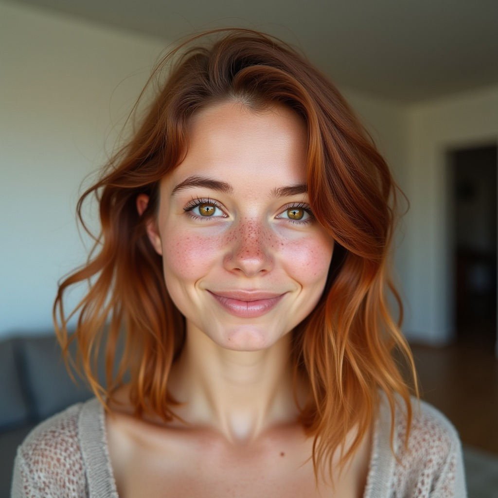
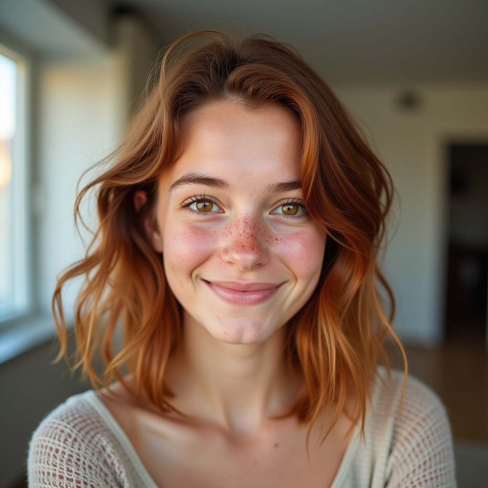

LHFAM — AI Reaction Channel Progress
where we are
The full pipeline (text → AI voice → AI character → talking-head video → spliced reaction clip) is working end-to-end on open-source models running on a single 24GB cloud GPU. This is a pipeline proof-of-concept, not shippable content. What's in §5 and §6 below is the cheapest possible end-to-end demonstration — a floating talking-head bust against whatever background the bible image happened to have. To get to shippable we still need the character composited into a believable creator-setup environment (at a desk, in a real-looking room, ideally with the source clip on a screen they're reacting to), tighter animation framing, expression-range fixes (§7 D1), and better motion/body language. Voice is the only piece that's actually at shipping quality today.
1. voice — chatterbox turbo
All audio in this section is generated from text by Chatterbox Turbo using Mason's 20-second reference clip as the cloning source. Each line is a real reaction we're going to use against actual source clips.
mason reference (the input we cloned)
20s · the source voice
turbo-cloned reaction lines
All produced from text; no editing. The [chuckle]/[gasp]/[groan] non-verbals were performed by Turbo in Mason's voice from inline tags in the prompt — we did not splice in real samples.
81 lines like these were generated total (one per reaction across 50 source clips). Listen for: natural prosody, the non-verbal tags performed in-voice (not spliced), preservation of Mason's vocal character.
2. character bible — mason
A "character bible" is a 12-image library of the same identity in 4 expressions × 3 framings. Generated from mason_goth.jpeg as the PuLID-FLUX identity reference. We pick the right shot per reaction beat.
reference (input)

bible (12 generated images, click to enlarge)
Notes: "Surprised" came out more concerned than open-mouth surprise, "halfbody" framing got loose interpretation. Both fixable with prompt tightening if we want, but characters are usable as-is.
3. character bible — synthetic (fully AI-invented)
No source photo. Generated a base keyframe from text, then used that keyframe as PuLID's identity reference for the bible. Goal: an arbitrary AI character we can swap voices/wardrobes on without needing a real-person photo.
v2 reference (text-only generated keyframe)

v2 bible
Open issue: "Neutral", "surprised", "deadpan" all still trend toward subtle pleasant smile — FLUX-dev has a strong bias toward pleasant subjects that survives even id_weight=0.6. The character is usable for friendly content but emotional range is narrower than the Mason bible.
v1 reference

v1 bible (smile-locked)
4. what we rejected — SDXL + InstantID (Tier 1)
Yesterday's first attempt before switching to FLUX. Same 12-image matrix, identity-preserving via InstantID. Disqualified for two reasons.
- Getty Images watermarks bleeding through on multiple images (SDXL training-data leak — see laughing/surprised shots).
- Waxy/plastic skin on expressive shots — uncanny-valley territory; not "real human" enough.
- Identity drift: keyframe had long blonde hair with bangs, bible drifted to pixie cut on most images.
5. end-to-end pipeline validation
Bible image (still) + Mason Turbo audio → EchoMimic V3 → talking-head MP4 with lip-sync. This is the core loop the whole project rests on. Both characters tested with the same audio (the "amused" line) for direct comparison. What you're about to see is a bust against the bible image's original background — not a creator at a desk in a room. Treat it as proof the pipe works, not as a sample of final output.
What's clearly NOT shippable yet: floating-bust framing with no body / no environment / no desk / no monitor / no creator-setup signals. Animation is just face + slight neck. Composited against the bible image's outdoor/indoor background, not a believable streamer-room scene. Motion library is limited. This is "the pipe works" not "the content is good."
6. PiP demos (yesterday's batch using Mason headshot directly)
8 reaction clips spliced into source videos in the SniperWolf PiP format. These were made BEFORE we had the FLUX bibles (the talking head is just mason_goth.jpeg animated by EchoMimic on each audio). These are scratch demos to feel the format and confirm the splice plumbing works — not anywhere near production quality. The talking head is a static portrait against a plain background; a real product needs the character in a creator setup (room, desk, lighting matching the source clip's energy, etc.).
7. open decisions for the team
Things that need a call before we scale up to producing real content.
8. cost & infrastructure
| day | focus | pod hours | cost |
|---|---|---|---|
| May 3 | Voice research + Chatterbox Turbo bake-off | ~3hr @ $0.70 | ~$2.10 |
| May 4 | Turbo bulk gen (81 lines) + 8 EchoMimic talking heads + 8 PiP demos + AI character plan | ~6hr @ $0.70 | ~$4.20 |
| May 5 | SDXL → FLUX upgrade + 2 character bibles + Phase A validation + Phase B refinement | ~12hr @ $0.70 | ~$8.40 |
| total active GPU time to date | ~$14.70 | ||
| parked | Pod stopped (volume + container disks preserved, no GPU) | $0.02/hr | ~$0.50/day idle |
persistent assets (survive pod migrations)
- /workspace/echomimic_v3 — 24GB EchoMimic V3 Flash models
- /workspace/hf_cache — 33GB FLUX-dev + PuLID weights
- /workspace/PuLID — pipeline code
- /workspace/venv-chatterbox — 12GB TTS venv
- /workspace/venv-kokoro — 4GB fallback TTS venv
- /workspace/LHFAM — rsynced repo + voice references + reaction JSONs
Volume disk: 80GB / ~73GB used (7GB headroom). Bumping to 150GB would give comfortable room for adding Wan2.2 models if/when D4 goes that way.
repo
Branch: development-timothy. All scripts pushed. All docs at docs/:
- research-voice-models-2026-05-04.md — full voice research
- research-visual-models-2026-05-04.md — full visual research
- 2026-05-04-ai-character-plan.md — three-tier character build plan
- 2026-05-04-autonomous-session.md — live log of the multi-day work
- echomimic-v3-setup.md — proven setup recipe
9. for the meeting
Suggested agenda for the team review (15-30 min):
- Watch the 2 validation videos in §5 (60s)
- Browse the 8 PiP demos in §6 (~5 min, you'll skim)
- Listen to a couple of Turbo audio samples in §1 (~2 min)
- Eyeball the Mason bible (§2) and synthetic v2 bible (§3 v2 tab)
- Walk through D1-D6 — pick which calls we make tonight vs defer
- Agree on the next 2-3 day plan (likely: scale-out pilot of 5 full reactions on Mason bible, parallel investigation of one of D1/D4)